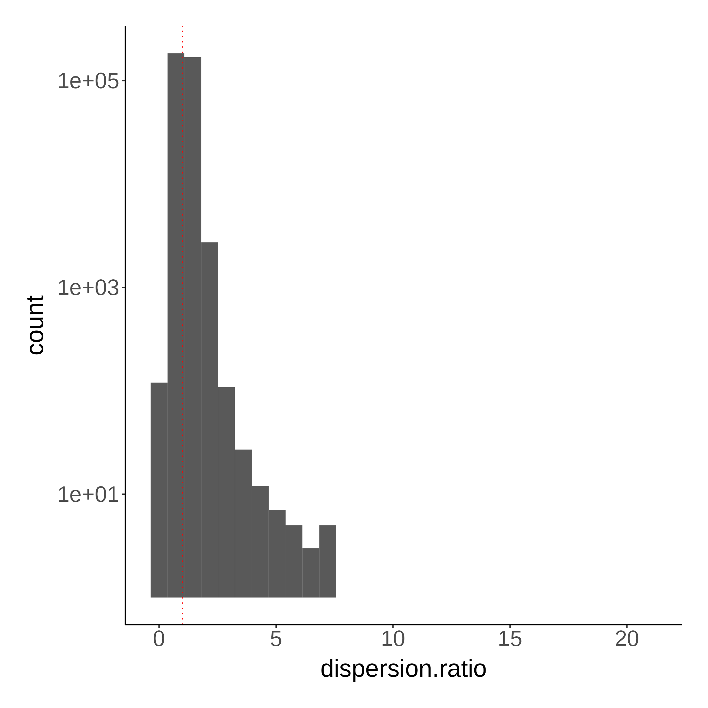
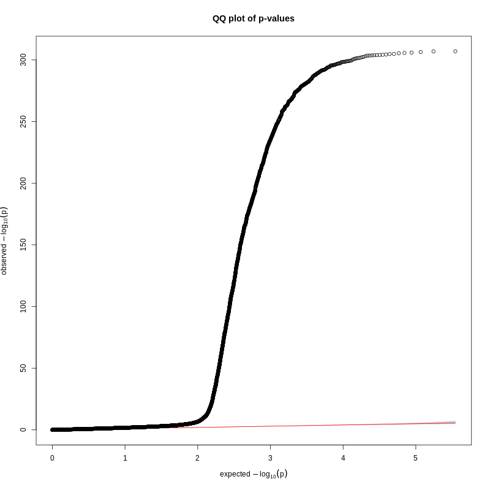
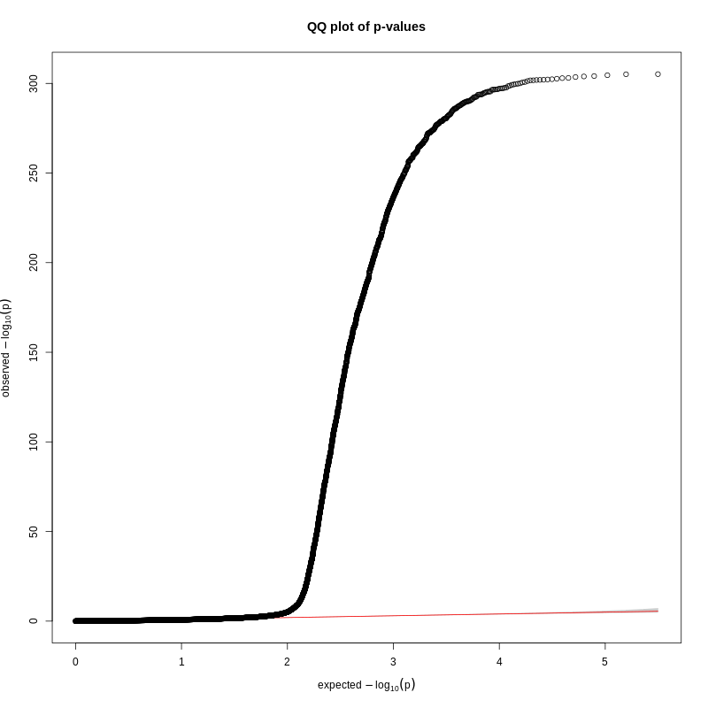
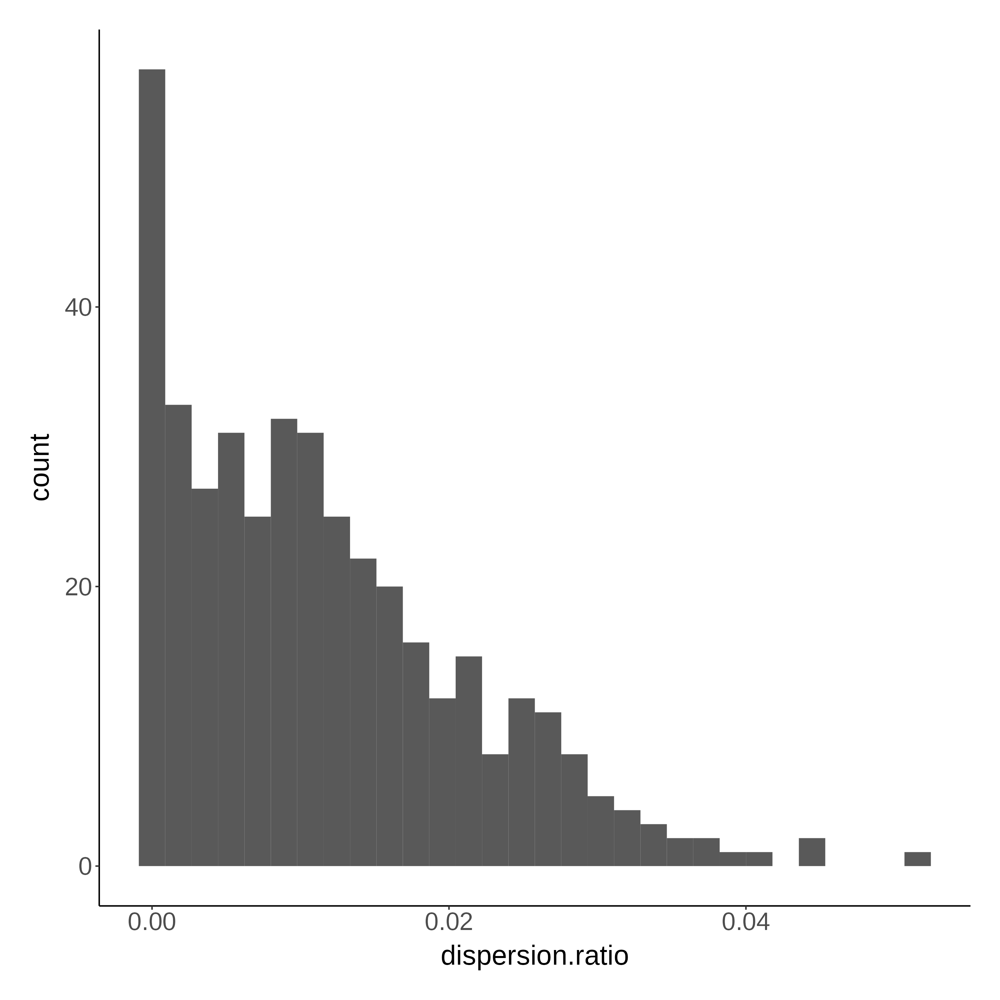
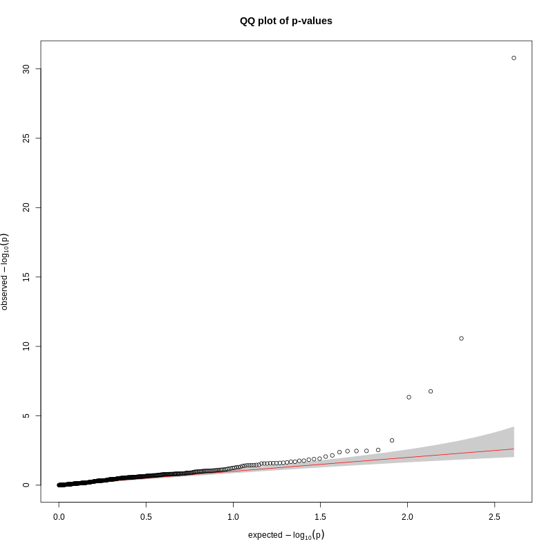
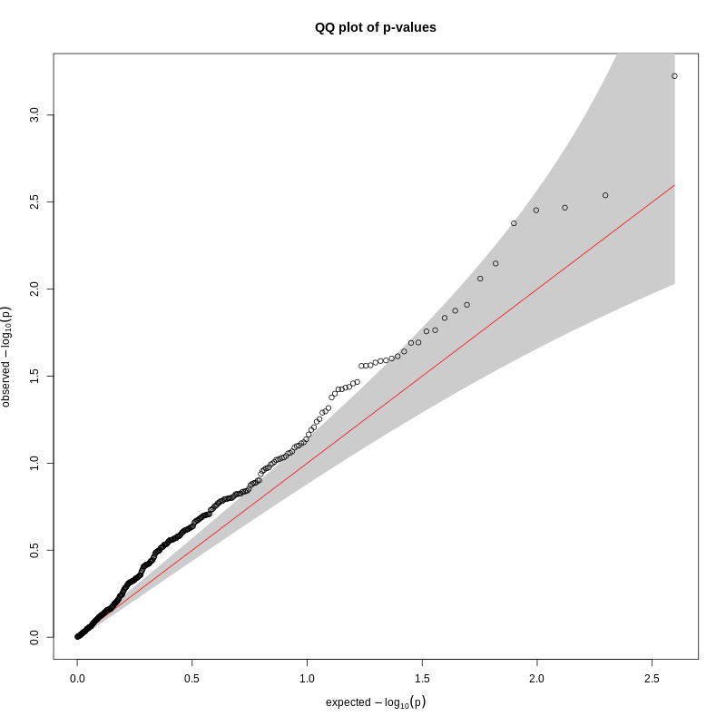
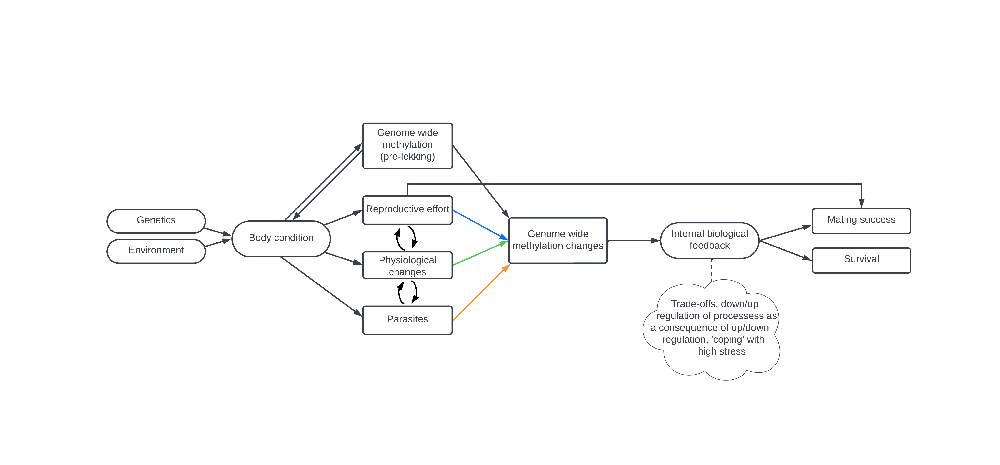

10 Ongoing discussion
This page is dedicated to dump several aspects that we’re still discussing.
10.1 Testing sensitivity to filtering parameters
TBD: here we want to test if the same CpG sites turn significant and to what extent our results differ if we use more or less strict (post-)filtering decisions (Section 3.4).
10.2 Filtering for overdispersion
We can exclude CpG site models that suffer from significant over (or under) dispersion using several methods. I tested what the difference is if we exclude CpG site models that have a dispersion ratio over a certain threshold (the “threshold method”; dispersion ratio should be < 1.1 and dispersion should not be significant) or if we exclude CpG site models that have a dispersion ratio outside of a specific quantile (the “quantile method”).
We run a series of models in the manuscript (e.g. first we look for sites that change across the lekking period (Section 4.1) and then we look for CpG sites whose change in DNA methylation is associated with reproductive effort (Section 5.3) and physiological changes (Section 6.1)) and the dispersion profile can differ between models.
10.2.1 Dispersion profile for changing sites (Section 4.1)
Without applying any filters, I plotted the distribution of the dispersion ratio and the QQ-plot based on all CpG site models tested (>300,000).


There seems to be quite some overdispersion so we definitely have to filter out CpG site models. I filter for sites using both methods and look at the resulting QQ-plot.


I chose to filter for the 90 percentile rather than 95 because there is a lot of overdispersion. There is a big difference in how many sites models we exclude: with the threshold method this is about half, whereas with the percentile method we (by definition) exclude about 10% only.
I think the threshold method QQ plot looks better so I think we should maybe go with that? Since there seems to be a huge overdispersion still when we filter for the 90% percentile.
10.2.2 Dispersion profile for sites associated with reproductive effort (Section 5.3)
To start with, I only compared the models fitted for lek centrality and not the other traits. After only filtering out models that did not converge, I plotted the distribution of the dispersion ratio and the QQ-plot.


There seems to be a lot less overdispersion than in the model for changing sites. There seems to be no model with a dispersion ratio > 1.1 so filtering for the threshold here won’t change anything. I think it’s more suitable here to exclude models with a dispersion ratio outside of the 95 percentile. But if we do this, the QQ-plot looks suboptimal and we actually exclude previously significant CpG sites. So maybe we should not filter for overdispersion here (since there is not really any overdispersion?).

10.2.3 My suggestion
I’d suggest we filter for dispersion ratio < 1.1 & dispersion p-value > 0.05 for the ‘changing CpG site model’ and we observe the QQ plot of the the reproductive effort / physiology / fitness models separately. Only if there is visible overdispersion we would exclude sites based on the 95 percentile.
10.3 Defining a ‘significantly changing CpG site’
As suggested I filtered for CpG sites that have an average change in methylation (between samples) of at least 10% between pre- and post-lekking to define a ‘significantly changing CpG site’ (as well as having a FDR-corrected q-value < 0.05, of course). The resulting volcano plot looks at follows (pretty cool!)

Whereas we previously identified >3000 significantly changing sites (based on the beta estimate), when we filter for at least 10% methylation difference (positive or negative), we end up with 437 significant CpG sites.
10.3.1 My suggestion
I’d argue we apply this 10% methylation filter to be more conservative.
10.4 Including pre-lekking methylation levels in the models
We expect that pre-lekking methylation levels affect delta methylation %. If pre-lekking methylation is 0%, there is potential for +100% change, but if pre-lekking methylation is 100%, there is potential for -100% change. On the other hand, if pre-lekking methylation is 50%, there is only potential for -50% and +50% change. Thus, we expect a U-shaped relationship between pre-lekking and absolute delta methylation.
In the reproductive effort, physiology and fitness models I had so far included pre-lekking methylation levels. Here we explore a bit more in depth if we should or should not do this.
10.4.1 Relationship pre and delta methylation
I plot the empirical data for the relationship, based on only the CpG sites that significantly change across the lekking period (as these are the CpG sites used in the subsequent models and otherwise delta methylation will be around 0). The red line in the left plot is the (linear) regression while correcting for id as a random effect (so a lmer output). The blue line in the right plot is an automatically generated regression line with ggplot.

There does seem to be some association between the two but not very strong.
10.4.2 Building a DAG
I want to understand better if we should or should not control for pre-lekking using a conceptual framework which will help us identify our expectations and identify ‘good’ controlling variables and ‘bad’ ones. For this, I tried to create a DAG (directed acyclic graph) which sketches out our causal expectations. I think this is quite tricky but should be done. This is what I came up with:

As a recap, our models look like this:
delta_meth ~ trait + pre_lekking + (1|site/id)
Because we expect a relationship between pre-lekking methylation and body condition, we want to ‘block’ this pathway when we try to understand the relationship between e.g. reproductive effort and methylation changes (the blue line). In Mc.Elreath’s words, “we want to close the ‘backdoor’”, see e.g. this youtube lecture or other summaries on his ‘the haunted DAG & the causal terror’ chapter in “Statistical Rethinking”). I am quite confident that that means we should include pre-lekking DNA methylation in the models after all.
This would then be the case for all models excluding those for fitness. The one for fitness is tricky, in theory if we want to isolate just the effect of delta methylation on MS, we should control for all the other things (i.e. reproductive effort, parasites, etc.) but I think that’s not really what we want to do, and just see if there is an association between delta methylation (which is affected by many different processes) and e.g. mating success and survival.
Note that this conclusion is based on if we all agree on this diagram, which I’m not 100% about!
Furthermore, when trying to think of this DAG, constructing it highlighted the complex relationship between reproductive effort, physiological changes and parasites. I wonder if the way I modeled things (separately, one model for each trait) is the best approach? I would still say yes, as long as we describe this complex relationship well (e.g. a male fights a lot, loses body weight, is more susceptible to parasite infection, gets ‘ill’, stops investing in reproduction but in immune response instead, reduced fighting rate).
Alternatively, we could only build one model with all variables as predictors (reproductive effort, physiology, parasites) but I think this would overfit our model and we have too little data for this, so I still think it’s okay to do it the way we did, but describe it in a way that we cannot outrule the possibility that even though we find a CpG site significantly affected by fighting rate, it’s also possible that other factors are into play here that affect fighting rate and thus methylation changes indirectly.
10.5 Including lek (site) as a random factor
So far, I include ID nested within site as a random effect. However, the distribution of samples across leks is very uneven; we have samples from 5 leks (118 samples in total). The lowest number of samples for a site is 6, with the highest being 30. However for the models that use delta methylation, these sample sizes are divided by 2.
10.5.1 My suggestion
Based on the distribution, I think it’s probably better to leave out lek site. Of course we should correct for the structure in our data where possible, but considering I actually get quite some errors due to not having enough samples within each site/id combination in the models, we might be trying to overfit our data. This might also explain the weird volcano plots (only a few very significant CpG sites)?